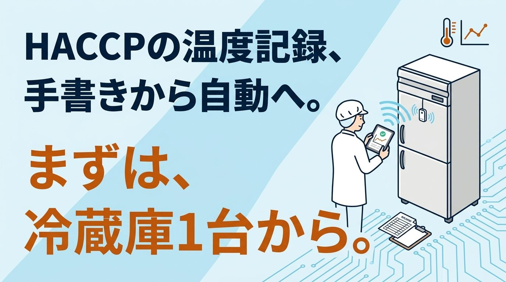

冷蔵庫の前で温度計を見て、記録用紙に書き込む。食品工場で毎日くり返されるこの作業は、HACCPの記録として欠かせない一方、現場の大きな負担にもなっています。以前のコラムで「まず取り組みやすいのは温度の自動記録」と書きました。今回はその実践編として、仕組みや注意点、費用の目安、そしてアイツインにできること・できないことを整理します。
手書きの温度記録は、何が大変なのか
冷蔵庫や冷凍庫を回って温度を確認し、用紙に書き、台帳にとじて保管する。この一連の作業が毎日続き、冷蔵庫の数が多いほど、確認と記入に取られる時間は積み重なります。忙しい日は後からまとめて書いてしまう、記入を忘れる、水に濡れて文字がにじむといったことも起こりがちです。さらに、紙の記録では夜間や休日の異常に気づけません。週明けに出社したら冷凍庫が止まっていた、という事態は、手書きの運用では防ぎようがありません。
HACCPの記録は、自動記録でも認められている
HACCPに沿った衛生管理は、2021年6月から原則すべての食品等事業者に求められています。厚生労働省のQ&Aでは、衛生管理の記録を電子データで保存しても差し支えないとされています。その際の留意点は、次の4つです。
- 記録の変更や消去があった場合に、その事実と内容を確認できること
- 記録の作成責任の所在が明らかであること
- 必要なときに画面や紙に分かりやすく出力できること
- 保存期間中、復元できる状態で保存すること
なお、何度を基準に、どのくらいの頻度で測るかは、全国一律で決まっているわけではありません。自社の衛生管理計画や、業界団体の手引書に沿って決めます。例えば、冷凍食品には−15℃以下で保存するという法律上の基準があり、加熱工程では中心温度75℃で1分間以上という目安が厚生労働省のマニュアルで示されています。こうした基準をもとに、自社の製品や工程に合わせて管理の方法を決めていきます。自動化は、決めたルールどおりの記録を確実に残すための手段です。
自動化の仕組みと、冷凍庫ならではの注意点
仕組みはシンプルです。庫内に置いた温度センサーの値を無線で集め、自動で記録します。設定した温度を外れたらメールなどで通知し、記録は帳票として出力できます。
ただし、冷蔵庫や冷凍庫ならではの注意点があります。
- 金属の庫内は電波が届きにくく、センサーや受信機の置き方に工夫が要る
- 低温では電池が早く消耗する。メーカーの資料では、−20℃で常温の半分程度になる例もある
- 扉のすき間にケーブルを通すと、冷気漏れや結露の原因になる
- 清掃で水がかかる場所では、防水・防塵に対応した機器が必要
- 停電や通信が途切れたときに記録が欠けないよう、本体に記録を残せる機器を選ぶ
また、庫内の温度と食品そのものの温度は別物です。加熱や冷却の工程で食品の中心温度を管理している場合は、庫内のセンサーだけでは代わりになりません。
センサーも温度計の一つなので、定期的な精度の確認も欠かせません。業界の手引書には、年1回や半年に1回といった例が示されています。
費用の目安と、小さく始める手順
市販の業務用ロガーは1台数万円程度からあり、センサーの利用料を月額で払うサービスでは、冷蔵庫3〜5台なら月数千円〜1万円程度の例も見られます。いきなり工場全体を変える必要はありません。
- 記録の負担が大きい冷蔵庫・冷凍庫を1台選ぶ
- 電波が届くか、センサーをどこに置くかを現地で確認する
- 1〜2週間は紙の記録と並行し、値が合っているか確かめる
- 異常が起きたときに、誰に通知し、誰が何をするかを決める
- 問題がなければ、ほかの冷蔵庫へ広げる
古い冷蔵庫でも、多くの場合は後付けのセンサーで対応できます。配線をいじらずにデータを取る方法は、レガシー装置のコラムでも紹介しています。補助金の対象になる製品もありますが、制度ごとに条件が異なるため、個別の確認が必要です。
アイツインにできること・できないこと
衛生管理のルールを決めることと、そのルールどおりに記録が残る仕組みを作ることは、別の専門分野です。アイツインは後者を担います。
アイツインにできること
- 冷蔵庫・冷凍庫に合うセンサーの選定と設置（電波が届くかの確認を含む）
- 既製品では合わない場所に、マイコンを使ったセンサーの仕組みを作る
- 記録の見える化と、異常時に通知する仕組みづくり
- 温度データをデジタルツインにつなぎ、工場全体の状態とあわせて見える化する
アイツインではできないこと
- HACCPプランの作成や見直し
- 温度計の正式な校正と、校正証明書の発行
- JFSやFSSC 22000などの認証取得の支援
- 保健所による衛生管理の指導
できない分野については、信頼できる専門の会社や相談先をご紹介します。どこに相談すればよいか分からない段階でも、まずはお気軽にご相談ください。
まとめ
HACCPの温度記録は、自動記録でも認められています。大切なのは、冷凍庫ならではの注意点を押さえ、1台から小さく試すことです。ルールづくりは専門家と、仕組みづくりはアイツインと。役割を分けて進めれば、手書きの負担から一歩ずつ抜け出せます。食品工場でのIoT活用の全体像は、食品工場のIoT活用のコラムもあわせてご覧ください。
参考
・厚生労働省「HACCP（ハサップ）」
・厚生労働省「HACCPに沿った衛生管理の制度化に関するQ&A」